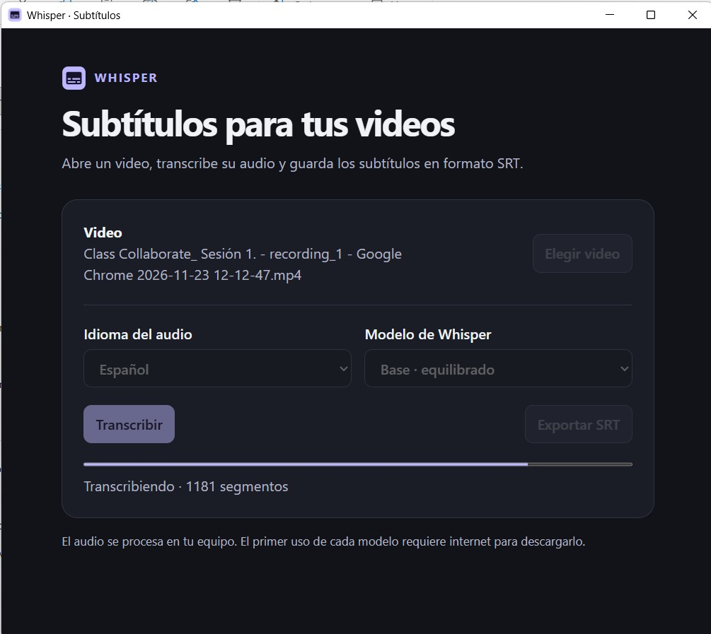

Whisper Desktop
Whisper DesktopInterfaz y progreso
ui.js llama a la API de Python a través de pywebview. Consulta el estado mientras la transcripción se ejecuta en segundo plano.
Abre un video en Windows, transcribe su audio con Whisper y guarda los subtítulos sincronizados como un archivo SRT.
Windows · WebView2 · Internet para la primera descarga de cada modelo
EXE sin firma digital. El Control inteligente de aplicaciones de Windows puede bloquearlo al abrirlo. En ese caso, puedes ejecutar la app desde el código fuente.
1
00:00:00,000 --> 00:00:02,400
Bienvenidos a la primera sesión.
2
00:00:02,400 --> 00:00:05,800
Hoy vamos a trabajar con subtítulos.
La interfaz elige el archivo y muestra el progreso. Python procesa el audio en tu equipo y genera el SRT.
ui.js llama a la API de Python a través de pywebview. Consulta el estado mientras la transcripción se ejecuta en segundo plano.
Desktop._transcribe() pasa el video a faster-whisper. PyAV decodifica el audio y Whisper devuelve segmentos con texto y marcas de tiempo.
write_srt() numera los segmentos, convierte los tiempos al formato SRT y guarda el archivo en UTF-8.
Clona el repositorio y abre Git Bash o BusyBox en Windows. El script run.sh abre la app con uv, muestra la versión de pyproject.toml, compila el EXE y sube el tag a GitHub. Publicar requiere acceso de escritura a origin. En BusyBox, usa busybox sh.
sh run.sh local
sh run.sh version
sh run.sh build
sh run.sh publish